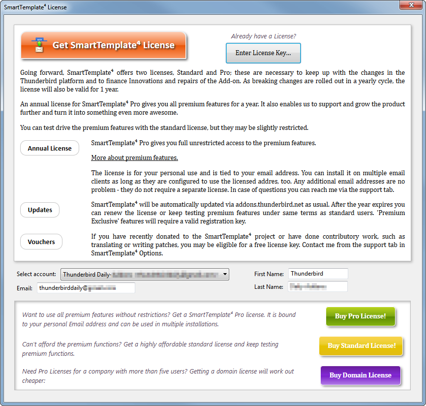
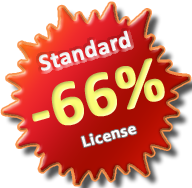

To Renew your license you can go to the SmartTemplates license tab and click the green renew / extend button.
This will extend or renew your license so that you get at least a year extra usage (if your license
expires in the future the year is added to that date) - even if you license is expired
you will get a full year. It is important that you go through this process from the
SmartTemplates license screen as this is the only way to get the cheaper renewal price.
As part of the renewal process, the old license will automatically be transmitted to the website
to determine eligibility. That why there is no external link outside of the SmartTemplates
Licensing screen to give you these special perks.
SMARTTEMPLATES - Licensing
Going Forward, SmartTemplates will require a license for continued use - the reason for this
is that unlike compiled software that runs on an operating system, the constant changes on the host mail software
(Thunderbird) require substantial ongoing changes with a high effort; something which cannot be provided for free
("as in beer") anymore. You may have noticed many Add-on authors abandoning their Add-ons on Firefox and
Thunderbird because it was not possible for them to support their Add-ons anymore - this is directly caused
by not trying to involve the users in funding the required work.
I tried to finance the changes with some extra features through the
SmartTemplates Pro license,
but the adoption has been too low - it was not enough to warrant the many days spent on free support and writing features but now
on top fixing all the issues (and rewriting a lot of code) so that SmartTemplates continues to run on the
Thunderbird 68 platform. Therefore I decided to add an affordable "Standard" License which will be required for continued
use of this Add-on in the future.
Alternatively, you can buy the standard license here.
This is now available at a third of the price of the Pro License.
It is valid for one full year after purchase, after which
it can be extended for a lower price. It is highly likely that at this stage the Add-on needs to be
completely rewritten to keep working on a future version of Thunderbird, as the "classic Add-on" system
will be replaced with a different technology. Only through funding this work can SmartTemplates
survive - it may be the price of a cup of coffee to you but consider whether you think it is not worth
supporting the many features that SmartTemplates gives you.
If you cannot support it at the moment I would encourage you to look for a free replacement Add-on, such as quickText.
To get a license for SmartTemplates click on the rightmost tab on the settings dialog:

This will bring you to the license page within Thunderbird, where you can select
the license most appropriate for you:

It's the easiest way to get a license as you get to select an email address for registration and delivery.
If you prefer, you can also go to the web shop directly:
You can use SmartTemplates on as many Thunderbird installations as you like as long
as it has your active, registered email address on it. Just select it from the account dropdown.
The registration email address is not given to any third parties or used
for marketing purposes, it is only used for order fulfillment and license verification. Validation is 100% offline and your key is not transmitted
anywhere.
|

|
"Life is going on in the West of Ireland. My wife had a large operation and I was
laid off working full time as a software developer. Instead I have decided to
build up a music production career and dedicate more time to addons development.
You can help best by buying a Pro license but donations are also welcome.
If you need a voucher for a reduced license please contact me through the
email address below.
Thanks again in advance. ..."


As users, we like to use the software the way we want, and we more or less expect it to be free of charge. The question is what
do the commercial software vendors make of this? Since the advent of facebook is a shift of users (and their data) from being the customers
becoming the merchandise, and the corporations becoming the customer. This is because even the best community sites cannot operate without
profit. The web is already overfraught with advertisement and data mining - The alternative is truly Free software that is
funded by donations.
I don't want to fund SmartTemplates through pushing advertisements on the users. Also IMO the user's data is something that belongs to only them; it is not a
commodity for companies to trade and play with.
Not ready to buy a license yet? You can still help by donating some money using the paypal links below!
|
Don't like paypal?
|
I love SmartTemplates - it makes my emails look awesome! I want to buy you a coffee!
Any Questions?
If you actually have donated already or only like freebies (yes, there is them...) please recommend SmartTemplates to your friends and colleagues!
|
Do you suggest any amount?
US$ donations: we suggest 10$ as that seems to be be a what most people like to donate - but of course smaller and greater amounts are always welcome.
Euro donations: 5 Euros would be nice and 10 Euros or more considered generous!
Your tip is important to make SmartTemplates even more excellent! If you can'ty afford it right now, consider it at the next update - in the meantime, recommend to friends and colleagues.
You can also add some feature requests here: Bugs & Features.
Other ways you can help
If you like to translate SmartTemplates in your own language, please visit Babelzilla
You can also leave a positive review at the Mozilla Addons Page - spread the word so more people start using it!
But I don't like / never use Paypal!
Just send me an email, and I give you my address for a cheque or note.
What does it mean then, free software ??
Free as in Free Speech, not Free Beer.
The reason I am putting a lot of work into SmartTemplates is because I am using it every day, in order to make my daily work
easier. I think it also important to share any tool that makes working easier and allow improvement of the tools.
I think the most important aspect on free software is that it is a political statement to avoid the pitfalls of
proprietary, monopoly driven software that coined terms such as "Embrace, Extend and Extinguish" and the innovation crippling
model of patenting software (for further reading, please see links below).
At the moment there is a conflict raging between the old proprietary model of software and the Free Software Concept,
and its you, the users who will really decide where the future will take us. By downloading the Mozilla products and extensions by
independant software developers, like SmartTemplates, you are actively helping the cause.
there is an excellent description of this concept here:
Quote: "Free software" is a matter of liberty, not price. To understand the concept, you should think of "free" as in "free speech," not as in "free beer."
Free software is a matter of the users' freedom to run, copy, distribute, study, change and improve the software.
It is also important to note that you can always modify SmartTemplates as it is open source and send me improvement suggestions.
Or you can use features in the existing software and use them in your own extension, provided you stick to the license
(you can not create commercial versions of the extension and you need to attribute / credit the original authors).
I have tried to make the code as readable as possible, so that you can check how SmartTemplates achieves its various goals.
What's happening right now?
The American congress now tries to introduce censorship of the internet. Click here for more information.
The web is changing very massively over the last years. This requires rethinking on how we use this community resource.
Community Sites are gaining a big amount of the power and the market share, the "login with facebook" idea
is now trying to lock our identities into their systems; building huge silos that lock in our data in order to keep users "within" their systems;
and while the web is still an open place and there are lots of "login with facebook" buttons, yet it has become increasingly difficult
to move our own data, determine when and where it is used and stored. This is because in this new model, the users become the
merchandise and the corporations become the customers. It is because in a "free" world this seems to be the only way to
generate some revenue, and believe me that community sites such as facebook are _not_ there to server the users. Like anything else
they are there to make money. The question is whether financing by loosing the ownership of one's own data and getting channeled into
advertisment slots, is really the way we want to go?
We are not the product! We are the community!
Mozilla is currently working on a new conecept called BrowserId, which aims to allow users to bring their data with them,
makes sure the data is encrypted on the server so it cannot be abused or mined without the user's consent. It also should make
it easier for the user to move the data across to a different community provider or remove it altogether. This is clearly not
in the interest of the community sites themselves if they base their business model around being "the only one", but it is another
necessary step for the webn to grow up, and for us users to emancipate ourselves from the providers.
A word on donations
I think that the donation model as such works, although I wish more people of the daily users (currently about 3,100) would take the
time to donate some money. There is only a minute fraction who actually click the donation link. So, if you've found SmartTemplates to improve your work or business productivity,
please take a moment. I _really_ appreciate the support. Thanks again in advance.
One thing that I think is a bad idea is to try to use advertisement or constant "nagging" at the users in order to earn some money. The only time you will hear from me
is when I release a new version, usually with new usability features and bug fixes.
I am actively refusing extensions that try to do things like add advertisements, change browser links (by adding referrers) or redirect users in order to achieve
this, there is a very fruitful discussion on the ATN Editors team who constantly review issues that the users bring to our attention
around this topic.
However, I also acknowledge that it is an inconvenience and a bit of a leap of faith to make a donation,
so I would like to sincerely thank you for reading this and considering.
Yours sincerely,
Axel
Further Reading